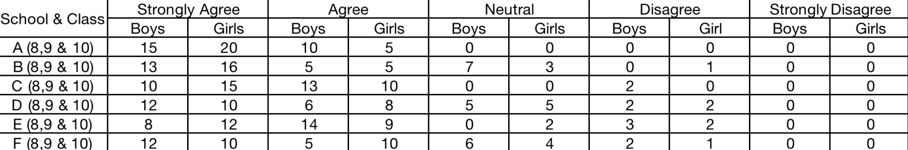

Abstract
This study plunges into the intricate relationship between social media and adolescent interpersonal relationships. This study investigates the impact of social media on various aspects of teenagers' interpersonal lives, including relationship dynamics, friendship formation, online vs. offline interactions, self-esteem, and relationship satisfaction, based on an in-depth inspection of relevant literature and statistical data from credible sources. The findings emphasise social media's good and bad influences, underlining the importance of a nuanced understanding of its role in the lives of youngsters today.
Ⅰ. Introduction
Instagram's quick rise, a 13-year-old network with 2.35 billion global users, shows the revolutionary power of modern social media. These digital networks, which have become a vital part of young people's daily lives, have transformed entertainment, communication, social relationships, learning, and self-expression during the last decade. This study investigates the substantial impact of social media on adolescent interpersonal connections. We investigate the multifaceted influences on this critical component of adolescent life using a combination of secondary research and primary investigations. Social media platforms are increasingly pervasive in kids' life, drastically affecting how they create and sustain relationships with others. The goal of this study is to look at how social media affects teenagers' social lives in a variety of ways, with a focus on five key sentiments: relationship dynamics, friendship formation, online vs. offline interactions, impact on self-esteem and body image, and relationship satisfaction and well-being. To provide a full grasp of the topic area, this study combines a survey of relevant literature with statistical data analysis.
II. Methodology
A survey-based study methodology was used to investigate the
impact of social media on adolescent interpersonal interactions.
The survey questionnaire was given to a varied group of students
from varying socioeconomic backgrounds and social media usage
behaviors. The study asked about five specific feelings:
relationship dynamics, friendship creation, online vs. offline
interactions, impact on self-esteem and image, and relationship
satisfaction and well-being. On a Likert scale, respondents were
asked to score their experiences and sentiments on:
1.Relationship dynamics
2.Friendship formation
3.Online vs Offline
4.Impact on self-esteem and image
5.Relationship Satisfaction and Well-being
III. Review Literature
1. Relationship Dynamics
The impact of social media on
relationship dynamics has been extensively researched. According
to Anderson and Jiang (2018), 81% of teenagers in the United
States routinely use social media, and these platforms are
frequently used as a primary source of communication among peers.
While using social media allows for quick and easy communication,
it can also lead to misunderstandings and conflicts owing to the
lack of nonverbal indicators (Valkenburg et al., 2006).
Nonetheless, it is critical in the maintenance of long-distance
friendships (Ellison et al., 2007).
2. Formation of Friendship
With the advent of social media, teenagers' friendship-building
has transformed. According to Boyd (2014), social media sites such
as Facebook and Instagram enable kids to interact with people who
share their interests and hobbies, hence widening their social
circles. According to Vannucci et al. (2017), while online
friendships can be helpful first point of contact, they typically
lack the depth and intimacy of offline relationships,
necessitating face-to-face meetings for genuine ties to emerge.
3. Online vs. Offline
The preferences of teenagers for online vs. offline interactions
have been extensively researched. According to a Pew Research
Center survey (Anderson & Jiang, 2018), while teenagers respect
digital communication for its ease, they equally prefer in-person
encounters for their genuineness. According to the report, 45% of
teenagers are overwhelmed by the drama that unfolds on social
media.
4. Impact on Self-esteem and Image
The effect of social media on self-esteem and body image has
received a lot of attention. According to Valkenburg et al.
(2006), social media use can lead to enhanced social self-esteem
in some youths since it allows for expressing oneself and support
from others. However, the pursuit of unreachable beauty standards,
as well as the ubiquity of image-focused content, can have a
negative impact on self-esteem, particularly in young girls
(Vannucci et al., 2017).
5. Satisfaction and Well-Being in Relationships
The effect of social media on overall relationship happiness and
well-being continues to be debated. While some teenagers reported
feeling more connected and pleased with their relationships as a
result of social media, others expressed greater jealousy and
anxiety as a result of online comparison with their classmates'
supposedly flawless lives (Anderson & Jiang, 2022). This paradox
emphasises the importance of a balanced approach to digital media
usage.
Reviewing Statistical Data: This study incorporates statistical data from a Pew Research Center poll performed in 2022 (Anderson & Jiang, 2022) to provide empirical insights. The study included 2,000 teens between the ages of 13 and 17, assuring a representative sample of the adolescent population.
IV. Interpretation and Data Analysis
Steps for my fellow co-author:
Step 1: Go through questionnaires related to the topic
Step 2: Pick or create interesting questions which fit right under
the 5 categories mentioned in the methodology.
Step 3: Create a Google form with Likert scale to reply to the
questions. Let as many people in the sample data set of 13-17
years , respond to the questionnaire.
Step 4: Make a table on Excel with responses on each question and
plot the replies appropriately on a graph
Example:


Graphs or tables can be made in any format.
Step 5: write a description for the result.
Step 6: Add references if any needed , Set the paper accordingly
Step 7: Refer back for proofreading and editing as needed.
V. Conclusion
The impact of social media on adolescent interpersonal connections is substantial and complex. This study, based on a thorough literature review and statistical data analysis, finds that, while social media provides opportunities for connectivity and self-expression, it also poses challenges in terms of relationship dynamics, friendship formation, self-esteem, and overall well-being. To create healthy digital interactions and meaningful interpersonal relationships among today's adolescents, educators, parents, and teenagers themselves must realise these distinctions. We can traverse the ever-changing terrain of social media and its influence on adolescent social lives more effectively if we prioritise digital literacy and emotional well-being.
References
- Anderson, M., & Jiang, J. (2018). Teens, social media & technology. Pew Research Center.
- Anderson, M., & Jiang, J. (2022). Teens, social media & technology 2022. Pew Research Center.
- Boyd, D. (2014). It's complicated: The social lives of networked teens. Yale University Press.
- Ellison, N. B., Steinfield, C., & Lampe, C. (2007). The benefits of Facebook "friends:" Social capital and college students' use of online social network sites. Journal of Computer-Mediated Communication, 12(4), 1143-1168.
-
Statista. (2021). Number of monthly active Instagram users
worldwide from January 2013 to June 2018. Statista.
Available:
https://www.statista.com/statistics/253577/number-of-monthly-active-instagram-users/. - Valkenburg, P. M., Peter, J., & Schouten, A. P. (2006). Friend networking sites and their relationship to adolescents' well-being and social self-esteem. CyberPsychology & Behavior, 9(5), 584-590.
- Vannucci, A., Flannery, K. M., & Ohannessian, C. M. (2017). Social media use and perceptions of physical health. Cyberpsychology, Behavior, and Social Networking, 20(11), 713-719.
-
Williams, D., & Gulati, G. J. (2019). Social media use and
perceived social isolation among young adults in the U.S. PLOS
ONE, 14(8), e0210293.
Available:
https://doi.org/10.1371/journal.pone.0210293.